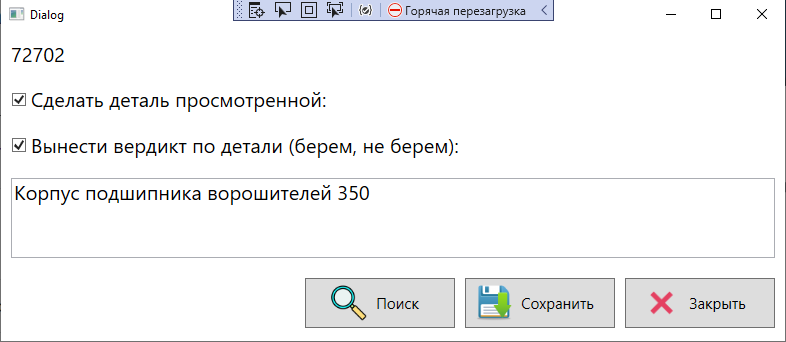
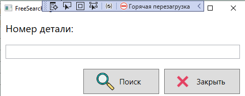
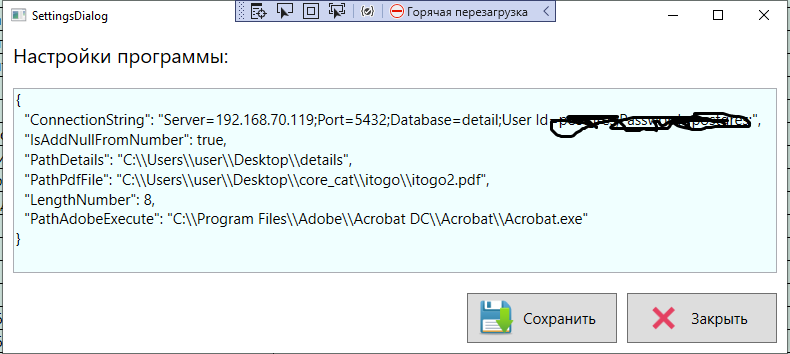

Назначение программы
Программа предназначена для потска деталей в каталогах
сборочных спецификаций в файлах Pdf
Подготовка программы.
1. Указать на директорию где возможно должен лежать
текстовый файл с номерами сборочных единиц (номер детали)
Если такого файла нет, просто укажите на любую директорию и положите туда пустой текстовый файл.
Если вы всеже решили использовать список номеров деталей.
Просто вставьте каджый номер детали в текстовый файл.
Одна строка - один номер.
И перезагрузите программу, при старте программы программа прочитает этот файл
и сформирует таблицу, на основе этого файла.
2. Укажите файл PDF в котором будем искать номера деталей.
Если файлов много, объедините все файлы для поиска в один файл.
Поиск по таблице.
Диалог поиска,
Чек - что эта деталь просмотренна
Чек - вердикт по этой детали ( покупаем или нет)
Описание детали<

Свободный поиск
Осуществляется поиск по коду, который вводим вручную

Настройки программы

IsAddNullFromNumber - добавлять лидирующие нули, если номер меньше LengthNumber, по умолчанию true.
LengthNumber - размер номера детали в каталоге, по умолчанию 8.
PathDetails - Папка с текстовым файлом или фалов со списком деталей.
PathPdfFile - Путь к файлу PDF, в котором будет осуществляться поиск.
PathAdobeExecute - Путь к исполняемому файлу Adobe Acrobat.